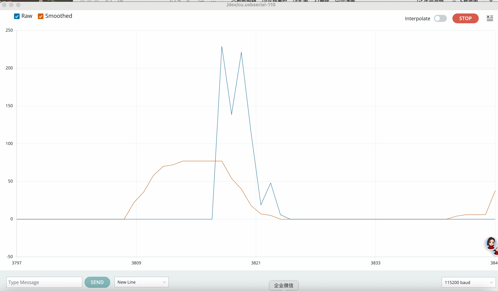
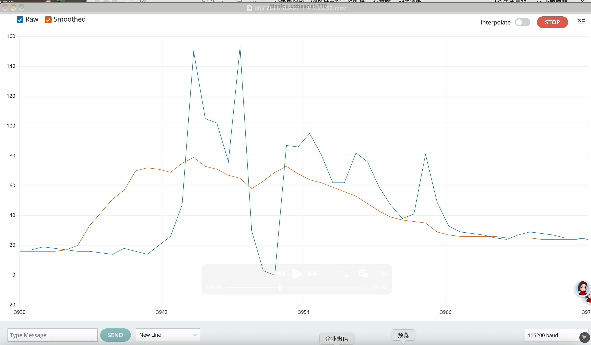
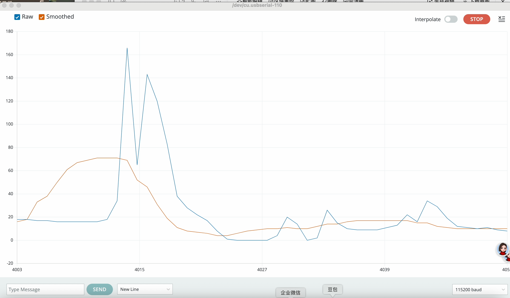
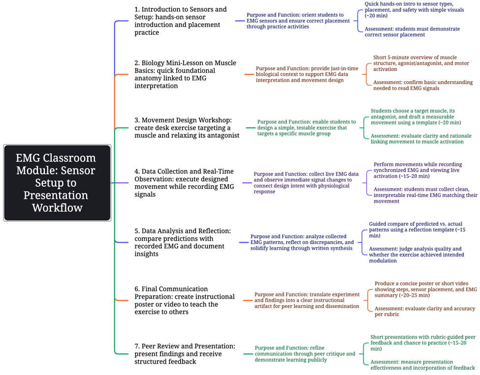

Part 2: Electromyography (EMG) Testing Experiment Log
1. Experimental Objective
To use an electromyography (EMG) sensor to verify changes in muscle status (from tension to relaxation/activation) in the upper trapezius during three desk-based relaxation movements, and to document the entire experimental process, including sensor exploration, troubleshooting, and data interpretation.
2. Equipment and Materials
- Arduino Uno/Nano microcontroller
- EMG muscle sensor module
- Three electrodes (positive, negative, reference)
- Dupont wires, USB cable
- Arduino IDE
- Laptop for data recording
3. Sensor Exploration and Electrode Placement
3.1 Initial Attempts and Learning
Initially, electrodes were placed on tendons or bony areas, resulting in near-zero signals or significant noise. After consulting relevant resources, it was determined that electrodes must be placed on the muscle belly (the fleshy, contractile portion of the muscle) to obtain clear EMG signals.
3.2 Final Placement (Upper Trapezius)
- Positive electrode: placed on the muscle belly of the upper trapezius (at the junction of the neck and shoulder, where the muscle bulges)
- Negative electrode: placed 2–3 cm below the positive electrode, on the same muscle
- Reference electrode: placed on a bony prominence (e.g., clavicle or sternum), away from the target muscle, to reduce interference
3.3 Skin Preparation
The skin areas where the electrodes were to be placed were cleaned with alcohol wipes to remove surface oils and dead skin cells, ensuring good electrode-skin contact and minimizing signal interference.
4. Calibration Method
- Resting Baseline Calibration: The participant was instructed to fully relax their shoulders and remain still while data were collected for 30 seconds, establishing a baseline for muscle relaxation.
- Zero Reference Setting: The average of the resting baseline was used as the zero reference for all subsequent measurements to offset errors caused by sensor drift.
5. Failures and Adjustments
5.1 Port Selection and Upload Failure
- Issue: An error appeared when trying to upload the code to the Arduino board.
- Possible causes: Wrong port selected (e.g., Bluetooth instead of USB); Board not properly connected or USB cable faulty; Board model in the IDE did not match the actual board
- Adjustment: Rechecked the connection and replaced the USB cable; Confirmed the board model in the IDE settings; Reselected the correct serial port
- After these steps, the code uploaded successfully.
5.2 Sudden Large Signal Jumps
- Issue: The EMG signal suddenly jumped to over 200 units, well above the normal range.
- Possible causes: Loose electrodes or a sudden movement by the participant.
- Adjustment: Pressed the electrodes down to ensure good contact and reminded the participant to stay still and breathe steadily during the test.
5.3 Baseline Drift
- Issue: The baseline signal (orange line) drifted even when the participant stayed still.
- Possible causes: Sweating, electrode issues, or interference from nearby electronics.
- Adjustment: Dried the skin and moved away potential sources of interference.
5.4 Motion Capture Speed and Code Delay Settings
- Issue: The signal couldn't keep up with the movement, causing incomplete or lagging data.
- Possible cause: The delay setting in the code was too short, making the sampling rate too fast for the setup.
- Adjustment: Increased the delay to set the sampling interval to 100 milliseconds, which helped stabilize the signal during movement.
6. Data Interpretation
Figure 1: Multi-Directional Neck Stretch
- Blue line: Raw EMG signal from the upper trapezius
- Orange line: Filtered signal (or reference from middle/lower trapezius)
- Interpretation: The signal started low at rest, rose with contraction (e.g., shoulder elevation), and dropped during the stretch, reflecting relaxation of the upper trapezius.

Figure 2: Shoulder Rolls
Interpretation: Regular peaks in the blue line matched the rhythm of contraction and relaxation during the movement. The orange line showed the overall trend. After the movement, the signal returned to a level below the starting baseline.

Figure 3: Overhead Stretch with Hands Clasped and Head Tilted Back
Interpretation: An initial peak appeared during arm elevation. During the head tilt, the signal stayed low and stable. Small fluctuations at the end were likely due to returning to a neutral posture.

7. Conclusion and Reflection
7.1 Conclusion
The EMG data successfully validated that all three relaxation movements effectively relaxed the upper trapezius, as evidenced by a significant decrease in EMG signal amplitude during the execution of the movements compared to the tense baseline.
7.2 Reflection and Areas for Improvement
- Use more secure electrodes to prevent poor contact issues during testing.
- Incorporate more advanced filtering procedures to further reduce signal noise and baseline drift.
- Simultaneously collect EMG signals from both the upper trapezius and the middle/lower trapezius to more clearly illustrate the activation patterns of antagonist muscles.
Part 3: Movement Table
Action 1: Neck Multi-Directional Stretch — Sit upright, tilt head left/right, forward/back. Goal: elongate upper trapezius fibers, relieve tension, improve cervical range of motion.
Action 2: Shoulder Rolls — 10 forward rolls, 10 backward rolls. Goal: mobilize shoulder girdle, boost blood flow, counteract forward shoulder posture.
Action 3: Prayer Stretch with Head Retraction — Hands in prayer position, raise arms overhead, tilt head back. Goal: stretch upper trapezius/chest, activate middle/lower trapezius to reduce upper trapezius load.
Part 4: Curriculum Outline
1. Learning Outcomes & Assessments
| Learning Outcome | Assessment |
|---|---|
| <LO1> Demonstrate correct placement of EMG sensors on a targeted muscle group. | Observation Checklist: Teacher observes each group during setup and uses a simple checklist to verify correct sensor placement (e.g., over muscle belly, aligned with muscle fibers, skin preparation). |
| <LO2> Collect and interpret real-time EMG data to distinguish between muscle contraction and relaxation. | Lab Worksheet: Students annotate a printed EMG graph, labeling when the muscle was contracting vs. relaxing and explaining what the changing signal means in their own words. |
| <LO3> Design a simple desk exercise that intentionally contracts one muscle while relaxing its opposing muscle. | Movement Proposal: Students submit a one-paragraph explanation of their exercise, identifying the targeted muscles, the expected EMG pattern, and why this movement helps counteract prolonged sitting. |
| <LO4> Analyze EMG data to evaluate whether their exercise achieved the intended muscular effect. | Data Reflection: Students compare their predicted EMG pattern with the actual data collected, then write a short analysis explaining any differences and what they learned from the results. |
| <LO5> Communicate their findings by creating a visual guide (poster or video) that teaches others how to perform their exercise correctly. | Peer Review Rubric: Students exchange posters/videos and use a simple rubric to assess clarity of instructions, accuracy of muscle identification, and quality of EMG evidence presented. |
2. Scaffolding & Support Structures: Secondary STEM Body Lab
| Category | Scaffolding Structures | Support Methods |
|---|---|---|
| Biology Content | • Just-in-time mini-lessons (5 min each before key tasks) • Anatomical diagrams poster | • Peer explanation: "Turn to your partner and explain..." • Visual glossary cards with images |
| Sensor Skills | • Step-by-step pictorial setup guide at each station • Video tutorials for installing sensors • "Good signal vs. noise" example graphs | • Troubleshooting card (5 quick fixes) • Teacher check-in + simplified goal if frustrated |
| Movement Design | • Movement proposal template • Example exercises with annotated EMG predictions • Muscle pair reference chart | • Partner brainstorming • Modified task: test any exercise first, then refine |
| Data Interpretation | • Data reflection template (prediction vs. actual) • Annotated model graphs on classroom walls | • Graph annotation checklist (axes, labels, key moments) • Peer data chat protocol ("What do you notice?") |
| Final Communication | • Poster/video template with required sections • Peer feedback rubric distributed in advance | • Partner presentation practice before recording • Exemplar videos from previous classes |
3. Class Flow Mindmap

Part 5: Design Journal
Design Journal 1: Fan Aoyu (Mike)
When I saw the Arduino board and all the wires at the start of this project, I panicked a little. We spent the first hour just trying to get the code to upload, and I kept getting some error message with no idea what it meant. We tried different USB ports, restarted the computer, checked the board settings—nothing worked until someone suggested we change the cable. That finally fixed the hardware issue, but then we ran into software problems with the Arduino environment. Eventually we figured out that we had to select the right board model inside the IDE as well. Looking back, what I wish someone had told me is that the tech setup should be as simple as possible for a biology lab. Students don't want to spend an hour troubleshooting computers when they signed up to learn about muscles. A pre-checked station or a very clear, step-by-step wiring diagram would have saved us so much time and frustration.
Once we finally got past all that, the science clicked immediately. When we got a signal and I saw the graph move with my shoulder shrug—raising my shoulders made the blue line go up, dropping them made it go down—it all made sense. Muscle contraction equals electrical signal, and I could see it happening in real time. That real-time feedback was super motivating; it felt like a game, trying to make the line go higher or lower.
I arrived assuming that once we had the sensor working, it would just work consistently, but that turned out to be wrong. The signal drifted, and different movements gave us different quality data—it was much more finicky than I expected.
At the end, I'm left wondering how this would actually work in a real classroom with thirty students. Who sets up all the sensors? What happens when half the groups can't get a signal? I don't know whether we can manage that without TA or colleague support, and that question stays with me.
Design Journal 2: Yang Yuandi
I was really excited about the biology side of things, but the beginning ended up being all about wires and code. I kept thinking to myself, when do we actually get to the muscles? The electrode placement was also a bit of a puzzle. We put them where we thought they should go, but got no signal. We moved them a little, got a messy, noisy signal. We moved them again, and finally got a clean one. I wish someone had just explained from the start why the muscle belly picks up the signal and why tendons don't. It would have saved us a whole lot of trial and error. Looking back, I can see that all that fiddling with wires was necessary, but at the time it felt like a detour from what I actually wanted to be doing.
It really clicked when we started comparing the graphs for different movements. The shoulder rolls gave these rhythmic peaks and valleys, almost like waves. The overhead stretch, on the other hand, gave a long, flat, low line. That's when I realized that relaxation isn't just one single state—there are actually different patterns to it. Some movements create this flowing, wave-like pattern, while others just drop the activity and hold it there. Seeing that difference helped me understand the physiology in a much deeper way than just reading about it. It made me realize that the body is way more nuanced than I had given it credit for.
What kept me going was seeing our hypotheses get confirmed. We'd predict that a certain movement would relax the muscle, and then the graph would show exactly that. It felt like we were doing real science, not just following instructions. There was something satisfying about saying "this is what I think will happen" and then watching the screen prove you right. The tedious part was definitely the skin prep and calibration. Wiping with alcohol, waiting for the baseline to settle, sticking and re-sticking electrodes—it was repetitive and seemed to take forever. By the third or fourth round, I found myself getting impatient, just wanting to get to the actual testing part.
I came in assuming that relaxation would mean the signal goes all the way down to zero. But it doesn't. Even when a muscle is relaxed, there's still some baseline activity. I learned that the goal wasn't to hit zero, but to get below the tense baseline. That was a more nuanced understanding than what I started with. It made me realize that my body is always doing something, even when I think it's doing nothing.
We learned a fair amount about the electrical activity of muscles, but I think it would have helped even more if we had a better grasp of muscle anatomy. Understanding exactly which muscles are doing what, and where they're located, would probably deepen our understanding even further. I kept wondering during the experiments whether we were actually measuring what we thought we were measuring, and a stronger anatomy foundation would have given me more confidence there.
Design Journal 3: Lin Jiayuan (Kelly)
At the very beginning, I worked with Mike and Yuandi on Arduino, but I honestly felt quite lost. I wanted to help yet had no idea where to start. They both picked it up faster than I did, so I just stood by, handing them parts occasionally. I felt anxious but couldn't really contribute. As the experiment progressed, however, I gradually realized that seemingly trivial details—how I breathed, how I sat, how I positioned my body—all affected the data. If I had known about this earlier, I would have paid much closer attention and consciously controlled my state from the start, instead of only realizing it when reviewing the data later.
What truly made me connect with the scientific aspect was when I performed shoulder circles while watching the screen. It felt amazing in that moment: every time I lifted my shoulder, the curve rose; when I rotated it back, the curve dropped. There was an unexpectedly direct link between my physical movements and the graphics on the screen. Later, I tried moving faster and slower to see the differences. At a quick pace, the graph became highly jagged, with sharp ups and downs; when I slowed down, the curve turned smooth, like a gentle wave. In that instant, I realized the graph didn't just show that I was moving—it also revealed how I was moving: whether it was rapid or calm, tense or relaxed. This discovery was really fascinating and suddenly made all this feel personal to me, no longer just cold equipment and numbers.
The most enjoyable part of the whole process was the real-time feedback. Every movement I made changed the line on the screen instantly, which was highly intuitive, almost like playing a game—trying to control the line with my body, making it higher, lower, or smoother. I found myself unconsciously wondering: How will it react if I do this? Would it be better if I adjust that way? I got quite hooked on this feeling of "conversing between my body and the visuals."
What was tedious, though, was repeating the same movements over and over. To obtain stable data, we performed identical actions repeatedly. By the fifth trial, I was definitely less relaxed than the first; instead, I became somewhat stiff, even thinking, "Just get this over with." Waiting for the baseline to stabilize was also time-consuming. I had to sit still without talking, watching the line on the screen gradually even out, which was honestly quite frustrating. I understand this was necessary to ensure data quality, but it still felt dull in practice.
I used to think I knew best whether my body was relaxed. But the electromyography (EMG) showed me that sometimes when I thought I was relaxed, the baseline signal still remained, meaning my body hadn't fully returned to a resting state. The sensor was more honest than my own bodily sensations, making me rethink my understanding of my body—it turned out there was a gap between what I perceived as "relaxed" and my body's actual state.
There are still some questions I haven't figured out. I'm curious: if other students did this experiment, would they also find the initial part discouraging? We had several people exploring together and discussing with each other, but if someone faced all this equipment and software alone, would they just give up? Besides, the movement exercises we designed were based on me, tailored to my physical condition and movement habits. Would this setup work for someone with a different body type or different tension habits? I think figuring out how to make this equipment and method more accessible and user-friendly for people with different body types is something worth exploring further.